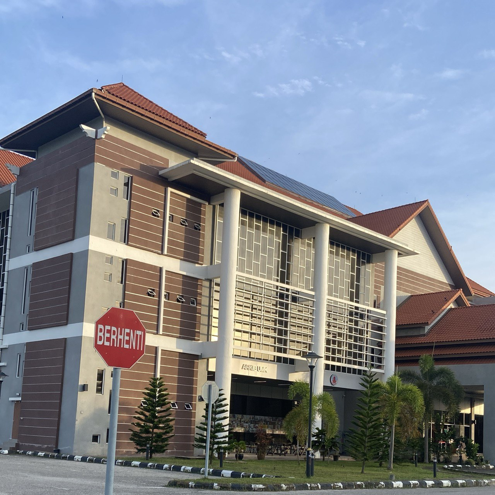
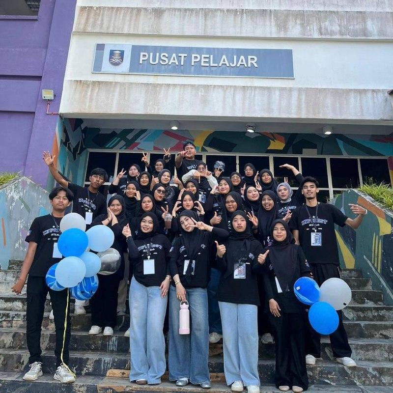

I had the opportunity to begin my internship at the Office of Library and Knowledge Management, Universiti Malaysia Kelantan Bachok, where I gained valuable exposure to library operations and knowledge management practices. I also had the opportunity to complete my internship in the UMK archive section, where I was exposed to a professional working environment and gained practical experience in handling, organizing, and preserving archival materials. Throughout this internship, I learned the importance of proper record management, systematic documentation, and accuracy in maintaining archival records. This experience enhanced my understanding of archival processes and helped me develop essential skills such as responsibility, attention to detail, and teamwork

I had the opportunity to manage a program called INFOFEST for the subject IMD317 where I coordinated schedules and activities to ensure the event ran smoothly. I also served as part of the Biro Persegaran, handling catering and food arrangements for VIP guests, including menu planning, supplier coordination, and maintaining high standards of quality. These experiences helped me develop skills in teamwork, time management, and event organization.
⭐SKILLS GAINED FROM INTERNSHIP AND HANDLED PROGRAM⭐
📁 Record management and documentation skills
🗂️ Handling, organizing, and preserving archival materials
⏱️ Time management and meeting deadlines
🤝 Teamwork and collaboration in a professional environment
📋 Event planning and program coordination
🍽️ Catering and logistics management for programs
🎯 Responsibility and attention to detail
💬 Communication skills with staff and team members
⭐LEARNING OUTCOMES⭐
📚 Gained practical experience in library and archival management
🤝 Improved teamwork and communication skills
📅 Learned how to organize and coordinate events effectively
🧠 Enhanced problem-solving and time management abilities
✔️ Developed responsibility and attention to detail in professional tasks
💪 Learned to handle challenges in a real working environment
⭐REFLECTION⭐
Learned the importance of responsibility in a professional environment
Managed daily tasks independently
Ensured deadlines were met accurately
Improved teamwork and communication skills
Collaborated with team members on INFOFEST
Coordinated with supervisors and peers
Developed better time management and organizational abilities
Gained confidence in handling challenges and problem-solving
Learned to improve skills step by step through practical experience